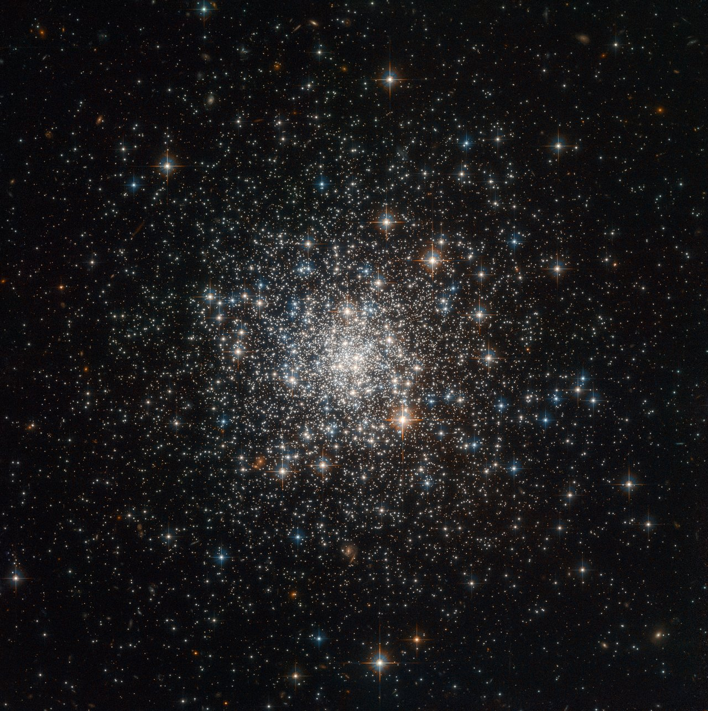

News
Celebrating 30th years of the Hubble Space Telescope
Hubble Sees Evaporating Planet Getting the Hiccups
.png)
Hubble Sees Boulders Escaping from Asteroid Dimorphos
Top News
Hubble Sees Evaporating Planet Getting the Hiccups
July 27, 2023
Hubble Sees Boulders Escaping from Asteroid Dimorphos
July 20, 2023
NASA's Hubble Hunts for Intermediate-Sized Black Hole Close to Home
May 23, 2023
Hubble Images a Starstruck Galaxy
Jul 21, 2023
Hubble Views a Galactic Monster
Jul 14, 2023
Hubble Observes a Stunning Spiral
Jul 7, 2023
Latest Hubble News
Hubble Celebrates 33rd Anniversary with a Peek into Nearby Star-Forming Region
Release | April 20, 2023

NASA's Hubble Hunts for Intermediate-Sized Black Hole Close to Home
Release | May 23, 2023

STScI Awarded Multi-Year Contract Extension for Roman Space Telescope Science Operations
Release | May 23, 2023
Giant Galaxy Seen in 3D by NASA's Hubble Space Telescope and Keck Observatory
Release | April 13, 2023
Hubble Sees Boulders Escaping from Asteroid Dimorphos
Release | July 20, 2023
Hubble Follows Shadow Play Around Planet-Forming Disk
Release | May 04, 2023
Hubble Sees Possible Runaway Black Hole Creating a Trail of Stars
Release | April 06, 2023

Hubble Unexpectedly Finds Double Quasar in Distant Universe
Release | April 05, 2023
Hubble Science Story Archives

Hubble Finds Dead Stars 'Polluted with Planet Debris
Release | 05.09.13
Hubble Sees the Remains of a Star Gone Supernova
Release | 05.03.13
Hubble Science Story Archives: June 2003 - May 2013
Since the dawn of civilization, humans have been limited in their understanding of the universe by their vision and imagination. The telescope enhanced our vision and tempered our pride, as observations by Copernicus, Galileo, and Kepler in the 16th and 17th centuries rebuffed the millennia-old conceit that Earth is the center of the universe, spearheading the Scientific Revolution.
Read More_HUBBLE’S TOP IMAGES
It has been compiled, and is regularly reviewed, by staff of
ESA/Hubble. A couple of quick notes before we get you to all
the amazing images though.
For this commemorative issue, we asked a number of
scientists to share their thoughts about the Hubble Space
Telescope.
“No matter what Hubble reveals — planets, dense star
fields, colorful interstellar nebulae, deadly black holes,
graceful colliding galaxies, the large-scale structure of
the Universe — each image establishes your own private vista
on the cosmos.”

1. PILLARS OF CREATION (NEW VIEW)
The NASA/ESA Hubble Space Telescope has revisited one of its most iconic and popular images: the Eagle Nebula’s Pillars of Creation. This image shows the pillars as seen in visible light, capturing the multi-coloured glow of gas clouds, wispy tendrils of dark cosmic dust, and the rust-coloured elephants’ trunks of the nebula’s famous pillars. The dust and gas in the pillars is seared by the intense radiation from young stars and eroded by strong winds from massive nearby stars. With these new images comes better contrast and a clearer view for astronomers to study how the structure of the pillars is changing over time.
2. A ROSE MADE OF GALAXIES
This image of a pair of interacting galaxies called Arp 273 was released to celebrate the 21st anniversary of the launch of the Hubble Space Telescope. The distorted shape of the larger of the two galaxies shows signs of tidal interactions with the smaller of the two. It is thought that the smaller galaxy has actually passed through the larger one “Hubble has become ‘The People’s Telescope,’ and has explored our solar system and beyond with acuity, capability, and power. It is hard to imagine a world without Hubble, without the beauty that Hubble has brought, without the wonders that Hubble has shared. We are fortunate to have been witness to this amazing machine.”

3. EXTREME STAR CLUSTER BURSTS INTO LIFE
“There’s an art to making beautiful images from scientific data, and the Hubble team has mastered it. Hubble also came of age at the same time as the internet, which created a great opportunity to distribute large format, high resolution images that are absolutely stunning on computer desktops and screen savers. Before that most people only saw astronomy images published in books or newspapers. “Hubble also had a fairly dramatic beginning, with the discovery of the flawed mirror and the subsequent mission where astronauts actually traveled to the telescope in order to repair it. “It is our eye on the universe, but at the same time it is an actual object in space that we can visit and even touch, which helps to bring the images it produces a little closer to home.”

4. ANTENNAE GALAXIES RELOADED
Hubble has snapped the best ever image of the Antennae Galaxies. Hubble has released images of these stunning galaxies twice before, once using observations from its Wide Field and Planetary Camera 2 (WFPC2) in 1997, and again in 2006 from the Advanced Camera for Surveys (ACS). Each of Hubble’s images of the Antennae Galaxies has been better than the last, due to upgrades made during the famous servicing missions, the last of which took place in 2009. The galaxies — also known as NGC 4038 and NGC 4039 — are locked in a deadly embrace. Once normal, sedate spiral galaxies like the Milky Way, the pair have spent the past few hundred million years sparring with one another. This clash is so violent that stars have been ripped from their host galaxies to form a streaming arc between the two. In wide-field images of the pair the reason for their name becomes clear — far-flung stars and streamers of gas stretch out into space, creating long tidal tails reminiscent of antennae.

5. HORSEHEAD NEBULA (NEW INFRARED VIEW)
This Hubble image, captured and released to celebrate the telescope’s 23rd year in orbit, shows part of the sky in the constellation of Orion (The Hunter). Rising like a giant seahorse from turbulent waves of dust and gas is the Horsehead Nebula, otherwise known as Barnard 33. This image shows the region in infrared light, which has longer wavelengths than visible light and can pierce through the dusty material that usually obscures the nebula’s inner regions. The result is a rather ethereal and fragile-looking structure, made of delicate folds of gas — very different to the nebula’s appearance in visible light. I am one of the professional astronomers from the generation that grew while the amazing pictures of Hubble were released. As a young girl I heard a talk in a planetarium about supernova, red giants, white dwarfs, black holes which I found extremely fascinating. This was just around the time that the Hubble was repaired and its first astonishing images were released to the public.

6. MAGNETIC MONSTER NGC 1275
This stunning image of NGC 1275 was taken using Hubble’s Advanced Camera for Surveys in July and August 2006. It provides amazing detail and resolution of the fragile filamentary structures, which show up as a reddish lacy structure surrounding the central bright galaxy NGC 1275. These filaments are cool despite being surrounded by gas that is around 55 million degrees Celsius hot. They are suspended in a magnetic field which maintains their structure and demonstrates how energy from the central black hole is transferred to the surrounding gas. By observing the filamentary structure, astronomers were, for the first time, able to estimate the magnetic field’s strength. Using this information they demonstrated how the extragalactic magnetic fields have maintained the structure of the filaments against collapse caused by either gravitational forces or the violence of the surrounding cluster during their 100-million-year lifetime. The filaments seen here can be a gaping 200 000 light-years long. The entire image is approximately 260 000 light-years across.

7. HUBBLE ULTRA DEEP FIELD IS FILLED WITH GALAXIES
Galaxies, galaxies everywhere – as far as the Hubble Space Telescope can see. This view of nearly 10,000 galaxies is the deepest visible-light image of the cosmos. Called the Hubble Ultra Deep Field, this galaxy-studded view represents a “deep” core sample of the universe, cutting across billions of light-years. The snapshot includes galaxies of various ages, sizes, shapes, and colours. The smallest, reddest galaxies, about 100, may be among the most distant known, existing when the universe was just 800 million years old. The nearest galaxies – the larger, brighter, well-defined spirals and ellipticals – thrived about 1 billion years ago, when the cosmos was 13 billion years old. In vibrant contrast to the rich harvest of classic spiral and elliptical galaxies, there is a zoo of oddball galaxies littering the field. Some look like toothpicks; others like links on a bracelet. A few appear to be interacting. These oddball galaxies chronicle a period when the universe was younger and more chaotic. In ground-based photographs, the patch of sky in which the galaxies reside (just one-tenth the diameter of the full Moon) is largely empty. Located in the constellation Fornax, the region is so empty that only a handful of stars within the Milky Way galaxy can be seen in the image. The image required 800 exposures taken over the course of 400 Hubble orbits around Earth. The total amount of exposure time was 11.3 days, taken between Sept. 24, 2003 and Jan. 16, 2004.

8. HUBBLE MOSAIC OF THE MAJESTIC SOMBRERO GALAXY
Hubble has trained its razor-sharp eye on one of the universe’s most stately and photogenic galaxies, the Sombrero galaxy, Messier 104 (M104). The galaxy’s hallmark is a brilliant white, bulbous core encircled by the thick dust lanes comprising the spiral structure of the galaxy. As seen from Earth, the galaxy is tilted nearly edge-on. We view it from just six degrees north of its equatorial plane. This brilliant galaxy was named the Sombrero because of its resemblance to the broad rim and high-topped Mexican hat. At a relatively bright magnitude of +8, M104 is just beyond the limit of naked-eye visibility and is easily seen through small telescopes. The Sombrero lies at the southern edge of the rich Virgo cluster of galaxies and is one of the most massive objects in that group, equivalent to 800 billion suns. The galaxy is 50,000 light-years across and is located 28 million light-years from Earth.

9. NEW STARS SHED LIGHT ON THE PAST
have fond memories of the Comet Shoemaker-Levy 9 impacts with Jupiter in 1994 [#52]. Many scientists, including myself, spent all week at the Space Telescope Science Institute analyzing the data and generating color images and maps of the impact scars in Jupiter’s clouds. Because the telescope mirror had recently been corrected, the beautiful details visible in every image were amazing. “Since then, I find that every new image is just as exciting and awe-inspiring. Perhaps one of my favorite images of Jupiter is from 2014 [#97]. We were using Hubble to study changes in the Great Red Spot, and when we began to process the images, we realized Ganymede’s shadow was directly in the way! “It was just incredibly poor timing, but it made for a spectacular and fun image.”

10. MOST DETAILED IMAGE OF THE CRAB NEBULA
This Hubble image – among the largest ever produced with the Earth-orbiting observatory – gives the most detailed view of the entire Crab Nebula ever. The Crab is among the most interesting and well studied objects in astronomy. This image is the largest image ever taken with Hubble’s WFPC2 camera. It was assembled from 24 individual exposures taken with the telescope and is the highest resolution image of the entire Crab Nebula ever made. “Hubble joined up a thousand years of astronomy, from the discovery of the supernova in 1054 that produced the Crab pulsar to the extraordinarily detailed images of its remnant taken with WFPC2 in 1999/2000.”

11. BUTTERFLY EMERGES FROM STELLAR DEMISE IN PLANETARY NEBULA
This celestial object looks like a delicate butterfly. But it is far from serene. What resemble dainty butterfly wings are actually roiling cauldrons of gas heated to nearly 20 000 degrees Celsius. The gas is tearing across space at more than 950 000 kilometres per hour — fast enough to travel from Earth to the Moon in 24 minutes! A dying star that was once about five times the mass of the Sun is at the centre of this fury. It has ejected its envelope of gases and is now unleashing a stream of ultraviolet radiation that is making the cast-off material glow. This object is an example of a planetary nebula, so-named because many of them have a round appearance resembling that of a planet when viewed through a small telescope. The Wide Field Camera 3 (WFC3) aboard the NASA/ESA Hubble Space Telescope, snapped this image of the planetary nebula, catalogued as NGC 6302, but more popularly called the Bug Nebula or the Butterfly Nebula.
12. HUBBLE’S SHARPEST VIEW OF THE ORION NEBULA
This dramatic image offers a peek inside a cavern of roiling dust and gas where thousands of stars are forming. The image, taken by the Advanced Camera for Surveys (ACS) aboard the Hubble Space Telescope, represents the sharpest view ever taken of this region, called the Orion Nebula. More than 3,000 stars of various sizes appear in this image. Some of them have never been seen in visible light. These stars reside in a dramatic dust-and-gas landscape of plateaus, mountains, and valleys that are reminiscent of the Grand Canyon. The Orion Nebula is a picture book of star formation, from the massive, young stars that are shaping the nebula to the pillars of dense gas that may be the homes of budding stars. The bright central region is the home of the four heftiest stars in the nebula. The stars are called the Trapezium because they are arranged in a trapezoid pattern. Ultraviolet light unleashed by these stars is carving a cavity in the nebula and disrupting the growth of hundreds of smaller stars. Located near the Trapezium stars are stars still young enough to have disks of material encircling them. These disks are called protoplanetary disks or “proplyds” and are too small to see clearly in this image. The disks are the building blocks of solar systems.

13. YOUNG STARS SCULPT GAS WITH POWERFUL OUTFLOWS
This Hubble Space Telescope view shows one of the most dynamic and intricately detailed star-forming regions in space, located 210,000 light-years away in the Small Magellanic Cloud (SMC), a satellite galaxy of our Milky Way. At the centre of the region is a brilliant star cluster called NGC 346. A dramatic structure of arched, ragged filaments with a distinct ridge surrounds the cluster. A torrent of radiation from the hot stars in the cluster NGC 346, at the centre of this Hubble image, eats into denser areas around it, creating a fantasy sculpture of dust and gas. The dark, intricately beaded edge of the ridge, seen in silhouette, is particularly dramatic. It contains several small dust globules that point back towards the central cluster, like windsocks caught in a gale.

14. OUT OF THIS WHIRL: WHIRLPOOL GALAXY (M51) AND COMPANION GALAXY
The graceful, winding arms of the majestic spiral galaxy M51 (NGC 5194) appear like a grand spiral staircase sweeping through space. They are actually long lanes of stars and gas laced with dust. This sharpest-ever image, taken in January 2005 with the Advanced Camera for Surveys aboard the Hubble Space Telescope, illustrates a spiral galaxy’s grand design, from its curving spiral arms, where young stars reside, to its yellowish central core, a home of older stars. The galaxy is nicknamed the Whirlpool because of its swirling structure. The Whirlpool’s most striking feature is its two curving arms, a hallmark of so-called grand-design spiral galaxies. Many spiral galaxies possess numerous, loosely shaped arms that make their spiral structure less pronounced. These arms serve an important purpose in spiral galaxies. They are star-formation factories, compressing hydrogen gas and creating clusters of new stars. In the Whirlpool, the assembly line begins with the dark clouds of gas on the inner edge, then moves to bright pink star-forming regions, and ends with the brilliant blue star clusters along the outer edge. The Whirlpool is one of astronomy’s galactic darlings. Located approximately 25 million light-years away in the constellation Canes Venatici (the Hunting Dogs), the Whirlpool’s beautiful face-on view and closeness to Earth allow astronomers to study a classic spiral galaxy’s structure and star-forming processes.

15. STELLAR SPIRE IN THE EAGLE NEBULA
Appearing like a winged fairy-tale creature poised on a pedestal, this object is actually a billowing tower of cold gas and dust rising from a stellar nursery called the Eagle Nebula. The soaring tower is 9.5 light-years or about 90 trillion kilometres high, about twice the distance from our Sun to the next nearest star. Stars in the Eagle Nebula are born in clouds of cold hydrogen gas that reside in chaotic neighbourhoods, where energy from young stars sculpts fantasy-like landscapes in the gas. The tower may be a giant incubator for those newborn stars. A torrent of ultraviolet light from a band of massive, hot, young stars [off the top of the image] is eroding the pillar. The starlight also is responsible for illuminating the tower’s rough surface. Ghostly streamers of gas can be seen boiling off this surface, creating the haze around the structure and highlighting its three-dimensional shape. The column is silhouetted against the background glow of more distant gas. Inside the gaseous tower, stars may be forming. Some of those stars may have been created by dense gas collapsing under gravity. Other stars may be forming due to pressure from gas that has been heated by the neighbouring hot stars.